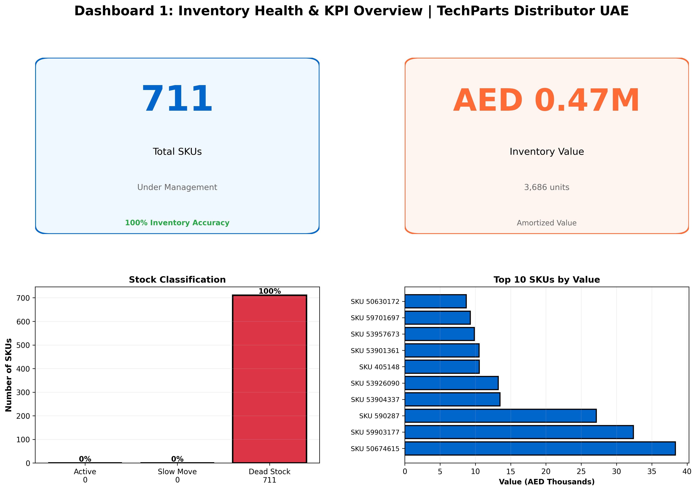

Achieving 100% inventory accuracy across 1,800+ SKUs through cycle counting, root cause analysis and inventory controls
A large industrial spare parts distributor was experiencing recurring discrepancies between system records and physical inventory. This impacted material availability, created audit findings, and resulted in unnecessary emergency procurement and manual workarounds.
Achieve 100% inventory accuracy through systematic cycle counting, reconciliation and root cause elimination.
Analysis revealed that 80% of discrepancies were concentrated in high-value SKUs and were primarily driven by three root causes: unreconciled transactions (40%), location errors (35%), and manual entry mistakes (25%).
Inventory Accuracy: 85%
Discrepancies: 270+ items
Audit Findings: Multiple
Manual Adjustments: Weekly
Stock Confidence: Low
Inventory Accuracy: 100%
Discrepancies: 0 (unresolved)
Audit Findings: 0
Manual Adjustments: Minimal
Stock Confidence: Maximum
Real time inventory accuracy monitoring and SKU classification dashboard supporting daily management visibility

Dashboard shows total SKUs managed, inventory value, stock classification, and top value SKUs
If inventory accuracy, stock reconciliation or audit readiness are concerns, we can apply this same proven approach to your operations.
Discuss Your Situation